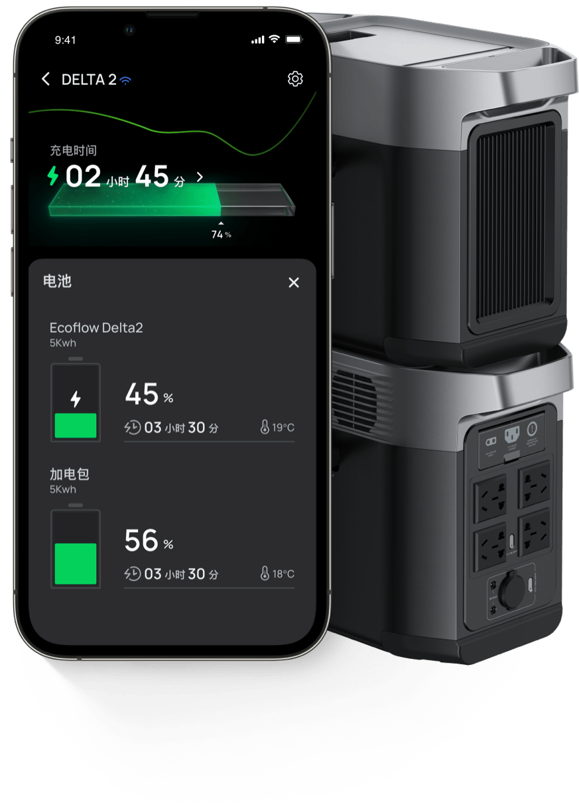
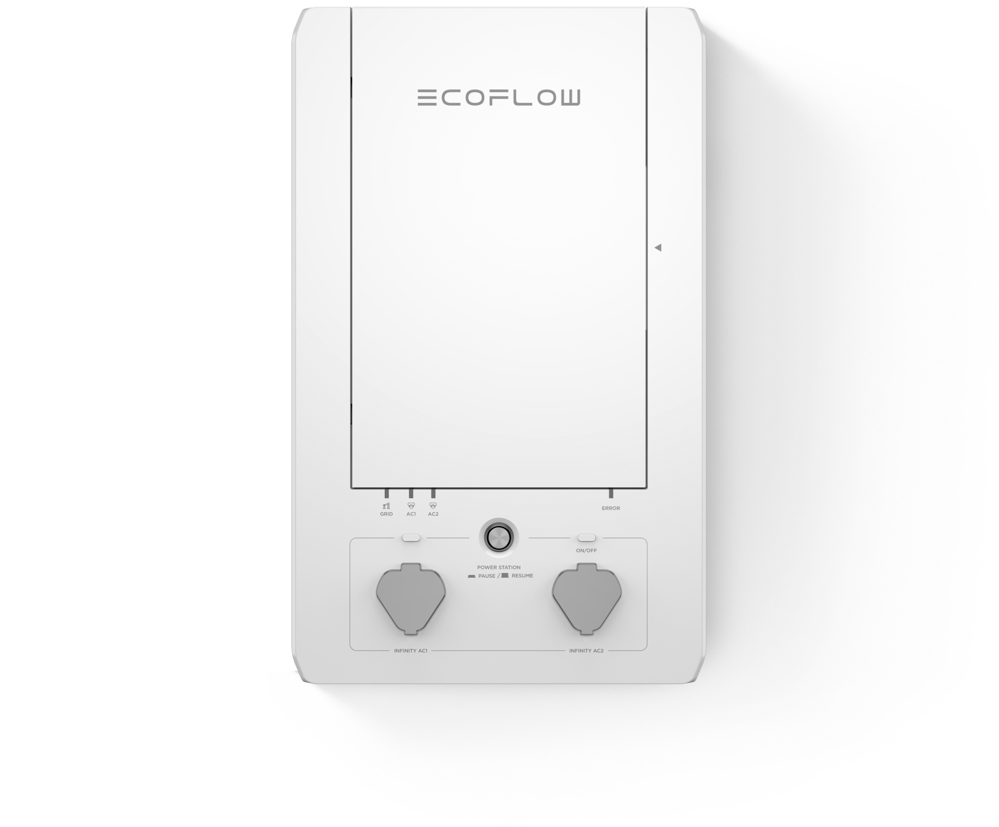

正浩储能用了大半年，这四个坑我替你先踩了
从 Backup Reserve 设错到 Smart Home Panel 版本不对，从 Space 批量操作误伤主力到以为便携电源自带 TOU——用正浩储能前必读的过来人经验。
去年双十一咬咬牙上了一套正浩的家庭储能，DELTA Pro Ultra 加 Smart Home Panel 一起搬回家。本来以为就是"插好就能用"的事，结果前后折腾了快两周才把 TOU 套利、Backup Reserve、Space 分组这些高级功能调顺。中间踩了好几个大坑，有些差点让我以为硬件坏了要寄回去换。
写这篇不是要教你怎么用——网上教程多的是——而是想把我踩过的那几个没人提醒、说明书上也没写清楚的坑摊开来讲。如果你正打算入坑或者已经在用但觉得哪里不对，这篇能帮你省好几个晚上的调试时间。
坑一：Backup Reserve 设完就后悔，TOU 省的电费怎么突然变少了
症状：App 里设了 Backup Reserve 之后，总感觉每月谷电充进去、峰电放出来的量没以前多了。去看数据才发现，能用于 TOU 套利的电池容量比实际容量小了一大截，而且自己之前根本没意识到这是 Reserve 吃掉的。
原因：Backup Reserve 的逻辑是在电池容量里画一条线，TOU 套利只在这条线以上的区域充放。比如你 3.6kWh 的电池，Reserve 设了 30%，相当于 1.08kWh 永远冻住不动，TOU 能用来套利的只剩 2.52kWh。设 Reserve 那天你可能只是随手拉了滑块，没算过实际影响有多大。
解法：先想清楚你的核心需求是什么。如果你主要靠 TOU 省电费、当地又很少停电，Reserve 其实 10%~15% 就够了——再多就是浪费套利容量。反过来如果你在台风多发区，Reserve 往 40%~50% 设也不心疼。ecoflow官网上有一份场景对照表，按你的地域电网可靠性挑一个数就行。另外 Reserve 消耗掉之后电网恢复会自动补电，不用手动操作，但补电过程如果刚好卡在峰时电价，也会偷偷多花点钱——留意一下补电时机。

坑二：App 里 TOU 入口灰了，以为硬件坏了——结果是 Smart Home Panel 版本不够
症状：绑好设备之后兴冲冲打开 App，发现 Smart Home Panel 的 Backup Reserve、Self-Powered 这些功能入口全是灰的，点也点不动。重置过设备、重新配对过 App，甚至联系过售后说"可能是固件坏了要寄修"。
原因：我后来去翻ecoflow文档才搞明白——不是你设备坏了，是 Smart Home Panel 本身的版本在限制功能。Smart Home Panel 1 只支持基础的 EPS 和 TOU，没有自供电模式和 Backup Reserve；Panel 2 才补上了这两个；Panel 3 又进一步优化了 EPS 切换速度和 HomeKit 集成。如果你买的是早期 Panel 1，这些高级功能从硬件层面就没有，App 入口灰掉是正常的。
解法：进 Smart Home Panel 详情页看固件版本和硬件型号，确认你手上是第几代。如果是 Panel 1 又想用 Backup Reserve 这类功能，只能考虑升级硬件——没有固件更新能补回来。好消息是 Panel 2 和 3 目前都还在官方支持期，大多数功能 OTA 就能解锁。另外还有一个常见误区：只有便携电源（没有任何 Smart Home Panel）的话，TOU、EPS、自供电这些功能一个都用不了——这些全部要求 Panel 参与调度，单台电源本身没有这个逻辑。

坑三：Space 分组没仔细分，批量操作一键误伤主力储能
症状：有一次我想给"露营装备"那个 Space 开个自动化，让 DELTA 3 周末自动进入露营模式开启所有输出口。结果第二天早上起来发现家里的主力储能 DELTA Pro Ultra 也跟着切到了露营模式，TOU 套利完全停了、Backup Reserve 也被临时关掉了。电网高峰时段家里差点断电。
原因：Space 是按场景/功能逻辑分组的，但我当时图省事，把所有电源都塞进了一个 Space——"主力储能"、"露营装备"、"应急备用"混在一起。App 里对整个 Space 执行批量规则时，所有设备一起响应了。这不是 bug，是 Space 的设计逻辑：批量操作作用在整个分组上，而不是分组里的"露营相关设备子集"。
解法：Space 的分组一定要物理隔离——主力储能、露营装备、应急备用必须各自独立成 Space，绝对不能混。我现在拆成了四个 Space：主力储能（DELTA Pro Ultra + Panel）、露营装备（DELTA 3）、太阳能系统（PowerStream）、应急备用（另一台 DELTA 3）。每个 Space 的自动化规则互不干扰，想给露营那台设什么模式都不会碰主力系统。另外还有个小技巧：可以给主力 Space 设置"管理员专属"，不共享给家人，避免误操作。
坑四：以为所有正浩设备都能连 App——结果手里那台 RIVER 是老款
症状：买了一台 RIVER Max 放车库当备用电源，回家发现 App 里搜不到、蓝牙也连不上。翻说明书才发现这台是早停产的老型号，根本没有 IoT 模块。浪费了半小时排查配网问题。
原因：正浩的产品线里，不是所有设备都能连 App，也不是能连的就功能全。老款 RIVER、RIVER Max、RIVER Pro 只有蓝牙直连，而且很多高级功能（比如远程充电调节）是有限的；再老一点的便携电源甚至连蓝牙都没。新款如 DELTA 3 系列、RIVER 3 系列才有完整的 IoT 远程 + OTA 固件升级。更坑的是，有些二手经销商会把老款当新款卖，参数表上写着"支持 App"但实际只有蓝牙。
解法：买之前先查机身有没有 IoT RESET 按钮——有这个按钮才支持远程配网。如果还在纠结，先去官方下载装好 App，然后打开添加设备页面，看能不能搜到你手上的型号：搜得到就是官方在维护，搜不到要么是停产老款要么是第三方翻新机。另外 Power Manager 这个新功能只在 DELTA 3 Plus/Max Plus/Ultra Plus 和 RIVER 3 Plus 上有，别以为买了 DELTA 3 就一定能用到。
防坑清单：用正浩储能前先对一遍这五条
- Backup Reserve 不是越高越好——它和 TOU 套利容量是此消彼长的关系，别随手拉滑块
- 没有 Smart Home Panel = 没有 TOU/EPS/自供电，单台便携电源做不了电网级调度
- Smart Home Panel 版本有硬限制，Panel 1 不支持 Backup Reserve 和自供电，升级硬件才能解锁
- Space 分组必须物理隔离主力系统和备用/露营设备，批量规则会作用在整个 Space 上
- 老款便携电源不一定有 IoT 能力，机身没有 IoT RESET 按钮就别指望远程控制
知道这些坑之后，正浩这套东西其实相当省心——调好一次就不用天天去看 App，谷时自动充电、峰时自动放电、停电自动 EPS 切换，整套逻辑跑得很稳。我后来把 Reseve 从 30% 调到了 12%（我们电网确实挺稳），TOU 的套利容量一下回来了 40%，省的电费比之前多出一截。所以说到底，关键是第一次就得把参数设对、把分组搞清楚，后面就是躺赚了。上面提到的那些功能对照和参数细节，我顺手在几个代码仓库也各放了一份，GitHub 上有完整备份，国内用户访问 Gitee 会更顺畅一份镜像，GitCode 也同步了一份，方便你随时对照。